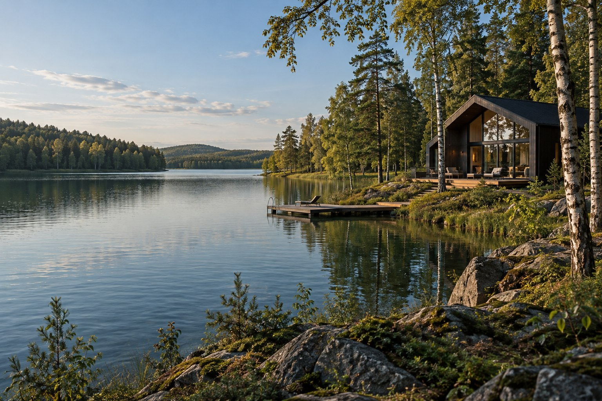

Можайское водохранилище · Локация
На Можайском водохранилище.
Можайское водохранилище — место для отдыха у воды в Московской области. В центре концепции — берег, лес и прогулки на свежем воздухе.

Московская область
Можайское водохранилище
Можайское водохранилище — место для отдыха у воды в Московской области. В центре концепции — берег, лес и прогулки на свежем воздухе.
Точный адрес и схема проезда появятся здесь после подтверждения расположения объекта.